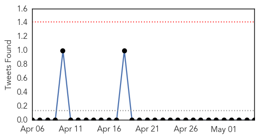
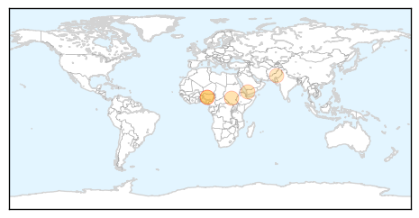
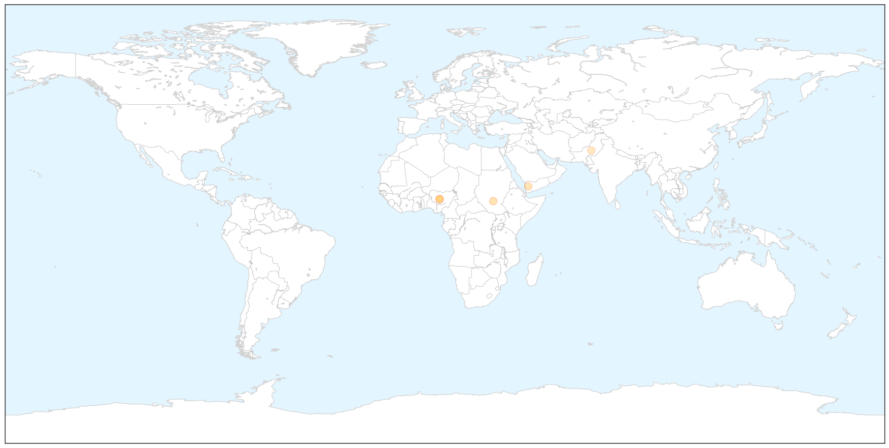
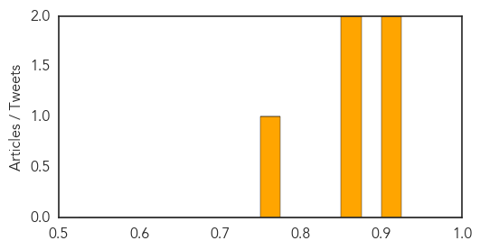
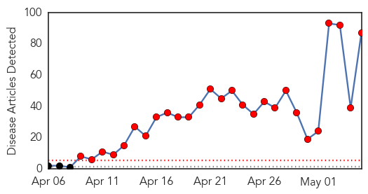
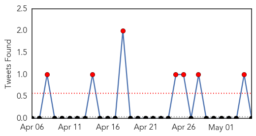
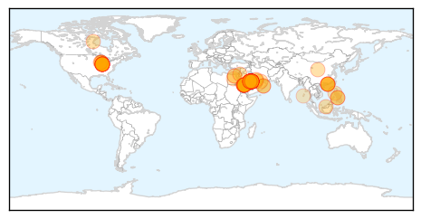
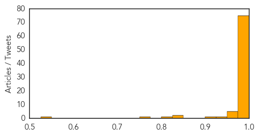

Swine Flu
30-Day Web Trend
6 alerts, 0 warnings

30-Day Twitter Trend
0 alerts, 0 warnings

Article Locations

X

Article Confidences
Top Articles:
- 0.923
- Global emergency declared as polio cases surge
- 0.914
- WHO declares public health emergency as polio spreads
- 0.867
- Polio declared an international emergency
- 0.854
- Military Conflicts in Pakistan Push Virus Spread, WHO Declares Polio a Global Health Emergency
- 0.755
- WHO declares polio a global health emergency
Top Tweets:
-
No tweets found for May 05, 2014
MERS
30-Day Web Trend
27 alerts, 0 warnings

30-Day Twitter Trend
7 alerts, 0 warnings

Article Locations
Article Confidences
Top Articles:
- 1.000
- 1st US MERS patient could leave hospital soon; man hospitalized in Indiana since April 28
- 1.000
- US patient with MERS is improving
- 1.000
- CDC Announces First Case of MERS in the US
- 1.000
- MERS Experts Fret About Deadly Virus' Great Unknowns
- 1.000
- U.S. MERS Victim Recovers, But How Did Virus Make It To America?
- 1.000
- MERS virus arrives in U.S. from Middle East News -- GOPUSA
- 1.000
- CDC Announces First MERS Case in U.S.
- 1.000
- CDC confirms first case of MERS virus in American
- 1.000
- US patient with MERS is improving
- 1.000
- U.S. MERS patient could leave hospital soon - National
- 1.000
- CDC confirms first case of MERS virus in American
- 0.999
- U.S. patient with MERS virus is on the mend
- 0.999
- Middle East respiratory syndrome coronavirus (MERS-CoV) – update
- 0.999
- First US MERS Patient Improving, Gets Ready to Leave Hospital
- 0.999
- Indiana MERS patient improving, heading home soon
- 0.999
- Mers coronavirus: international experts land in Abu Dhabi to investigate outbreak
- 0.999
- Egypt investigates first possible death, Saudi intensifies information drive
- 0.999
- MERS patient could leave Indiana hospital soon
- 0.999
- Spectre of Sars weighs on US as Mers virus arrives in Indiana
- 0.999
- Deadly MERS Virus Reaches US; First Confirmed Case Is in Indiana
- 0.999
- MERS Watch: U.S. Patient Improving, Off Oxygen
- 0.999
- CDC Issues Alert, Recommendations for Confirmed MERS-CoV Case in Indiana
- 0.999
- Infected Indiana patient improving
- 0.999
- Largest Indianapolis-Area Banks and Thrifts
- 0.999
- CDC Cautiously Eyes MERS to Keep from Spreading Virus Inside U.S Hospital
- 0.999
- MERS death toll in Saudi climbs to 107
- 0.999
- Likely camel-to-human MERS virus has human-to-human transmission risks
- 0.999
- MERS: 5 things to know
- 0.999
- Indiana MERS patient improving, heading home soon
- 0.999
- First U.S. MERS patient expected to be released from Indiana hospital
- 0.999
- First US Mers case doing better and 'may leave' hospital
- 0.999
- Exclusive - Specter of SARS weighs on CDC as MERS virus lands in U.S.
- 0.998
- Alferon(R) N Effective Against MERS (Middle East Respiratory Syndrome) Virus In-Vitro
- 0.998
- MERS cases reach more than 400, more than 100 dead
- 0.998
- Egypt investigates suspected MERS death
- 0.998
- MERS is in the U.S., CDC confirms first case in Indiana
- 0.998
- MERS patient ‘in good condition’; no new cases reported
- 0.998
- Hemispherx Biopharma (HEB) Reports Effectiveness of Alferon N Against MERS
- 0.998
- First MERS Virus Case Documented in the United States, CDC Reports
- 0.998
- Bahrain to launch campaign against MERS virus
- 0.998
- U.S. Patient with MERS is Improving — Naharnet
- 0.998
- US patient with MERS is improving
- 0.998
- Untitled Article
- 0.998
- Saudi Arabia: MERS cases reach more than 400, more than 100 dead
- 0.998
- Biological Drug Works Against MERS Virus in Lab
- 0.998
- Saudis report 36 MERS cases in 3 days; UAE adds 4
- 0.998
- First US MERS patient doing well; contacts healthy so far
- 0.998
- Here's Everything We Know About The First US Patient With The Deadly Virus MERS
- 0.998
- Bahrain on alert to fend off MERS virus amid regional concerns - Xinhua
- 0.997
- Middle East respiratory syndrome coronavirus (MERS-CoV) – update
Showing top 50 articles...
Top Tweets:
-
No tweets found for May 05, 2014